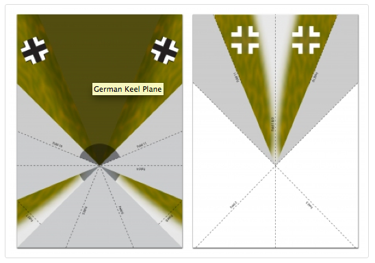
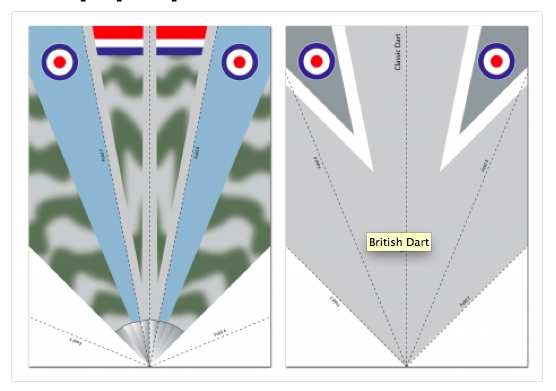
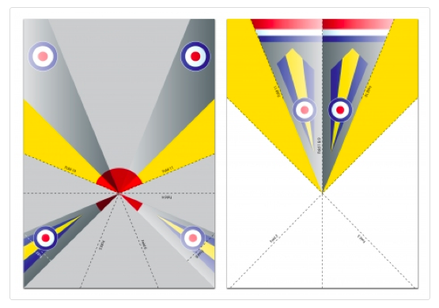

Wed, 23 Feb 2011 10:13:00 · planes · design · aviation · WWII
dedicated for all aviation fans out there these



Dedicated for all aviation fans out there! These suppa fantastic WWII paper planes are just the perfect thing to do in your otherwise dull weekends! Designed by Lucy Martin for the RAF Hornchurch project, the paper planes designs become progressively more difficult as you go down the list. For full size versions, visit RAF Hornchurch Project website.